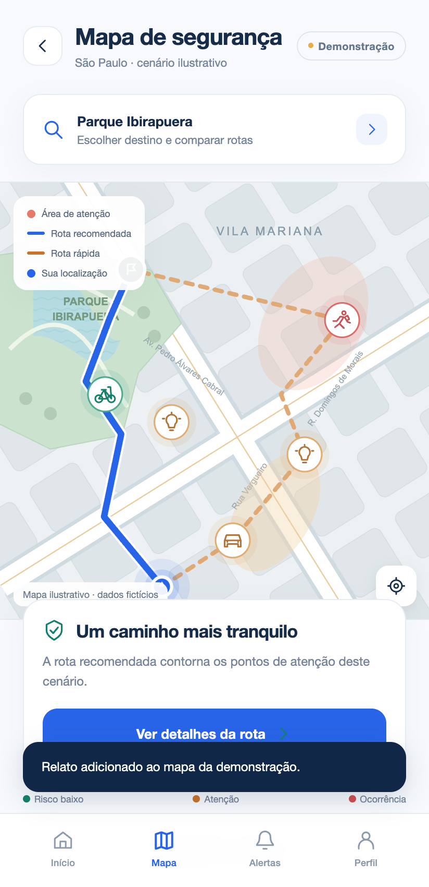
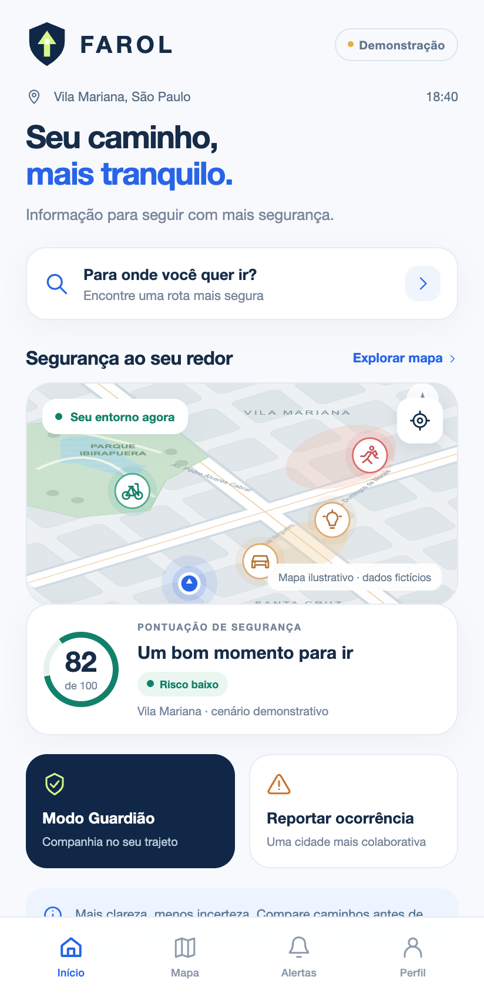

Seu caminho,
mais tranquilo.
Escolha seu caminho. Veja o entorno mudar. Sinta como seria ter companhia até chegar. A sua jornada com o Farol começa aqui.
Protótipo disponível para explorar. Dados e funções simulados.


Role para descobrir. O mapa acompanha.
O mesmo lugar.
Outro momento.
O caminho muda com a hora do dia. Veja como o Farol poderia transformar contexto em informação para a sua decisão.
18:40 · Mais movimento e iluminação natural no cenário.
Alguns minutos.
Outra perspectiva.
Chegar rápido ou contornar os pontos de atenção? Compare as rotas e veja seu trajeto ganhar uma nova direção.
3 minutos a mais. Um caminho com menos pontos de atenção.
Um caminho.
Uma companhia.
Imagine ter um contato de confiança por perto. Ative o Guardião e acompanhe esse pequeno trajeto até o destino.
Uma simulação de 6 segundos, no seu ritmo.
Nenhuma localização é rastreada ou mensagem enviada.
O que você vê
faz diferença.
Uma informação pequena pode mudar uma decisão. Escolha um relato e veja como ele aparece no entorno.
Toque em uma opção para adicionar seu relato fictício.
Você chegou até aqui.
Imagine o Farol no seu próximo caminho.
O Farol,
com clareza.
Uma ideia em desenvolvimento.
Uma experiência que você já pode conhecer.
O Farol já é um aplicativo em operação?
Esta versão é um protótipo visual e navegável para apresentar a proposta. Rotas, scores, alertas e localização são simulados. Ela não informa o risco real de uma região.
Posso testar no Android e no iPhone?
Sim. Esta versão web abre no Android e no iPhone e pode ser adicionada à tela inicial. O APK separado instala apenas no Android 8.0 ou superior. Ainda não há aplicativo iOS nativo.
O SOS envia mensagens ou chama uma emergência?
Na demonstração, não. O botão mostra o fluxo visual após ser pressionado por três segundos. Nenhuma mensagem é enviada e nenhum serviço de emergência é acionado. O Guardião também não acompanha sua localização real.
Há integração com câmeras e sensores?
Câmeras, sensores urbanos e alertas em tempo real fazem parte da evolução prevista. Eles não estão conectados à versão demonstrativa disponível nesta página.
Preciso criar uma conta para explorar?
O protótipo não exige cadastro e não pede acesso ao GPS ou aos contatos. Relatos e preferências da demonstração ficam apenas no navegador ou no aparelho, e podem ser apagados em Perfil → Reiniciar apresentação.
Conheça um jeito
mais tranquilo de ir.
Agora que você conhece o caminho, explore o protótipo completo.
Versão web para Android e iPhone · APK apenas para Android · dados fictícios
No iPhone, abra este link no Safari, toque em Compartilhar e depois em “Adicionar à Tela de Início”. No Android, use “Instalar app” ou “Adicionar à tela inicial” no menu do navegador. Após a primeira visita online, a demonstração também abre offline.